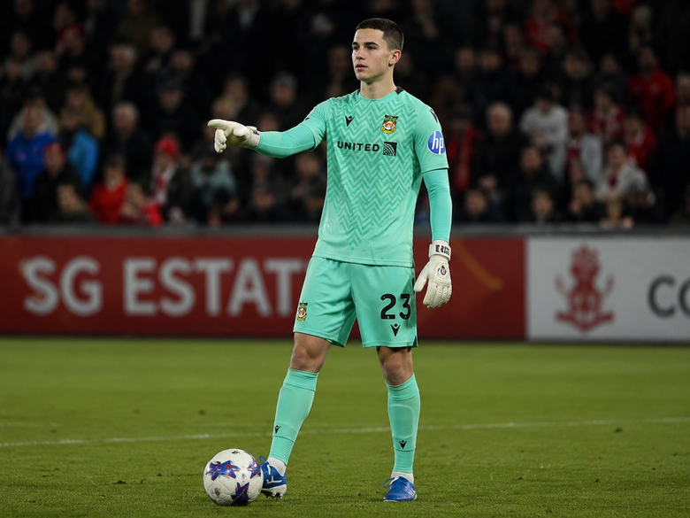

Profile
Mason grew up in Sheffield in the long shadow of his father Dave's gloves — Dave Webber kept goal for <strong>Sheffield United's reserves</strong> before a knee injury ended his career at 24. Mason joined Sheffield Wednesday's Academy at 8, was released at 12, and spent two seasons at Stocksbridge Park Steels' youth setup before a regional goalkeeping showcase in Manchester put him on Wrexham's radar. Jenkins' staff identified his raw reflexes as the standout attribute in a group of 40 trialists. He arrived in Wrexham in June 2025 as the quietest player in the dorms and, by most accounts, still is. <strong>Promoted to the first team on 21 March 2026</strong> as emergency backup goalkeeper following Arthur Okonkwo's training-ground injury, he made his senior debut at Bramall Lane — the ground his father once played in front of for Sheffield United's reserves — and was later Man of the Match keeping a clean sheet in the Youth Academy Rush Tournament final before his senior league debut against Hull City.
Attributes
2026/27 Season
Clean sheets and goals conceded aren’t tracked yet this season -- they need a post-match ratings screenshot to derive from.
Career
Potential range: 75-81